Hướng dẫn cách tính giá thành theo công trình vụ việc trên Misa theo Thông tư 200/2014/TT-BTC
I. Tổng quan về cách tính giá thành theo công trình vụ việc trên Misa theo Thông tư 200/2014/TT-BTC
1. Điều kiện áp dụng tính giá thành theo công trình vụ việc
Áp dụng đối với các doanh nghiệp xây dựng có các công trình như: nhà ở, đường xá, cầu đường… với nhiều hạng mục công trình con. Đối tượng tập hợp chi phí sẽ gắn với các các mục con, cuối cùng sẽ được tổng hợp lại thành giá thành chung của cả công trình.
2. Các bước tính giá thành theo công trình vụ việc trên Misa theo Thông tư 200/2014/TT-BTC
- Bước 1: Khai báo nguyên vật liệu
- Bước 2: Khai báo công trình/hạng mục công trình
- Bước 3: Xuất kho nguyên vật liệu
- Bước 4: Hạch toán các chi phí phát sinh
- Bước 5: Xác định kỳ tính giá thành
- Bước 6: Phân bổ chi phí chung
- Bước 7. Kết chuyển chi phí
- Bước 8: Nghiệm thu công trình
II. Chi tiết từng bước tính giá thành theo công trình vụ việc trên Misa theo Thông tư 200/2014/TT-BTC
Bước 1: Khai báo nguyên vật liệu
- Vào "Danh mục/Vật tư hàng hóa" => chọn "Vật tư hàng hoá" => chọn chức năng "Thêm".
- Khai báo nguyên vật liệu.
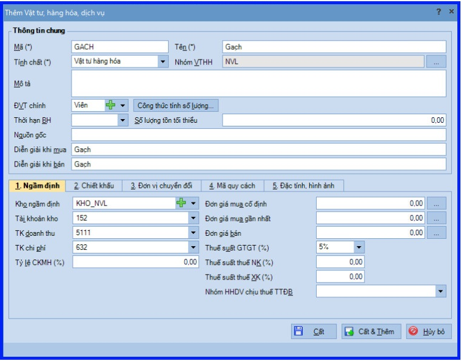
- Sau khi khai báo xong, các bạn ấn "Cất".
Bước 2: Khai báo công trình/hạng mục công trình
- Khai báo công trình cần xây dựng:
+ Vào "Danh mục/Công trình" => chọn "Công trình" => chọn chức năng "Thêm".
+ Tích chọn "Công trình".
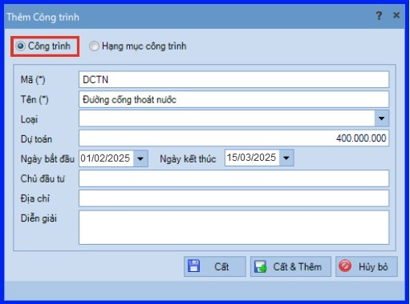
+ Khai báo các thông tin bắt buộc về công trình, sau đó các bạn ấn "Cất".
- Khai báo các hạng mục thuộc công trình (nếu có):
+ Trên danh mục "Danh mục\Công trình" => chọn "Công trình" => chọn chức năng "Thêm".
+ Tích chọn "Hạng mục công trình" và chọn công trình thuộc vào.
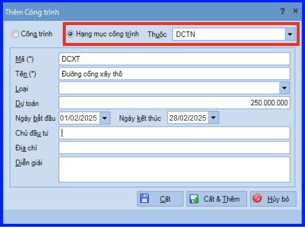
+ Khai báo các thông tin bắt buộc về hạng mục công trình, sau đó các bạn ấn "Cất".
CHÚ Ý: Trường hợp muốn quản lý các công trình theo từng loại khác nhau, có thể khai báo các loại công trình trên menu "Danh mục" => chọn "Loại công trình".
Bước 3: Xuất kho nguyên vật liệu
- Vào phân hệ "Kho" => chọn tab "Nhập, xuất kho" => chọn chức năng "Thêm\Xuất kho".
- Chọn loại chứng từ là "Sản xuất".
- Khai báo nguyên vật liệu được xuất kho để xây dựng công trình.
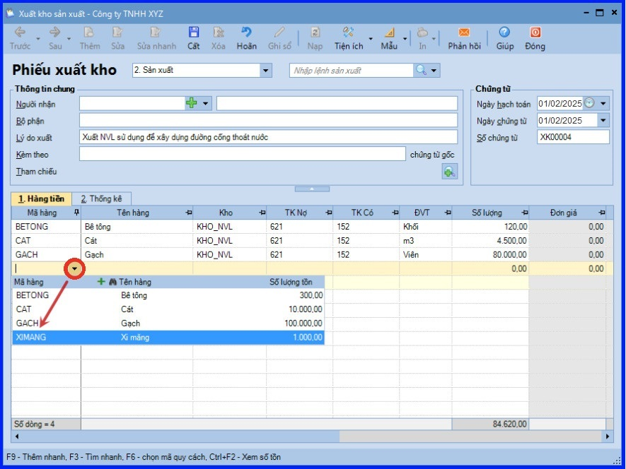
- Chọn thông tin "Công trình" bên tab "Thống kê".
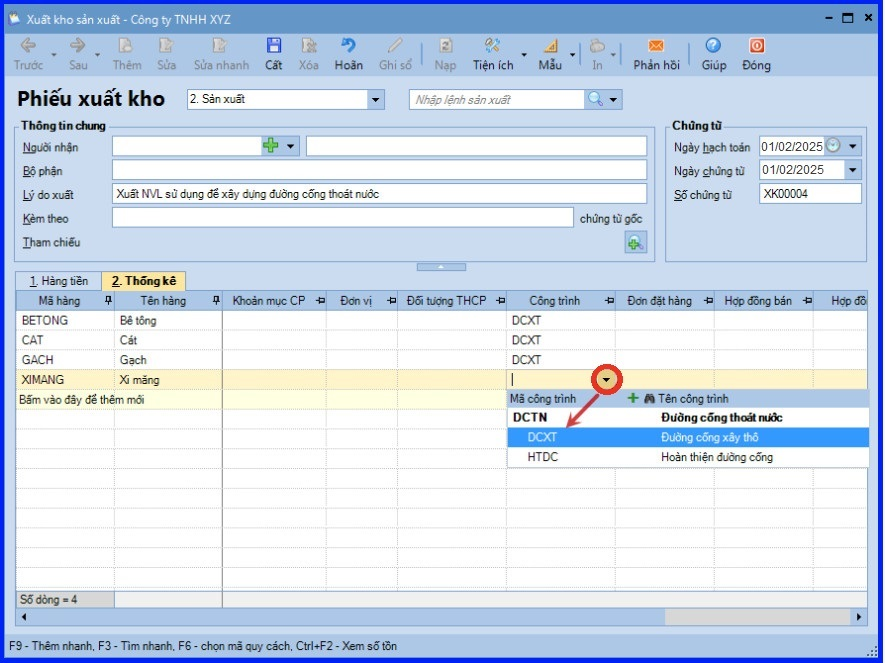
- Các bạn ấn "Cất".
CHÚ Ý:
- Với nguyên vật liệu tính giá xuất kho theo phương pháp "Bình quân cuối kỳ", đơn giá sẽ được hệ tự động tính sau khi thực hiện chức năng Tính giá xuất kho trên phân hệ "Kho".
- Với nguyên vật liệu tính giá xuất kho theo phương pháp "Bình quân tức thời", "Giá đích danh" và "Nhập trước xuất trước" => đơn giá sẽ được hệ thống tự động tính sau khi chứng từ xuất kho được "Ghi sổ".
Bước 4: Hạch toán các chi phí phát sinh
Các chi phí phát sinh liên quan đến việc tính giá thành (Nợ TK 621, 622, 623, 627, 154) có thể được hạch toán trên phân hệ "Quỹ", "Ngân hàng" hoặc "Tổng hợp".
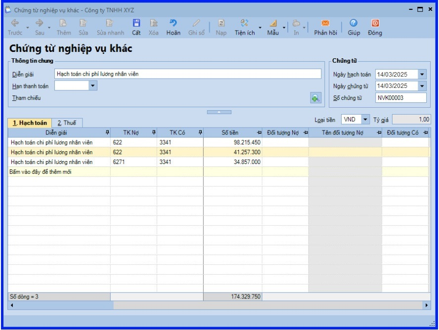
CHÚ Ý:
- Tích chọn chi phí không hợp lý (nếu có).
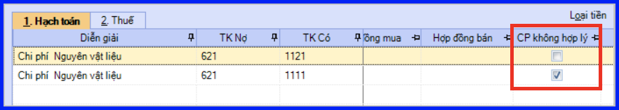
- Khi hạch toán các chứng từ chi phí phát sinh nếu xác định được là chi phí phát sinh cho công trình/hạng mục công trình nào, thì chọn thông tin tại cột "Công trình" hoặc bỏ trống nếu chưa xác định được công trình/hạng mục công trình.
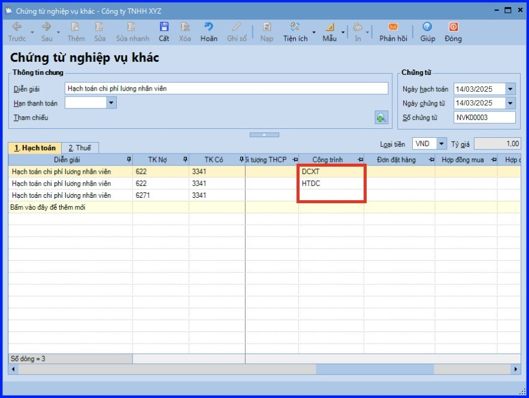
- "Tài khoản 623" chỉ áp dụng đối với các những doanh nghiệp trong lĩnh vực xây dựng, những doanh nghiệp có lĩnh vực hoạt động khác thì không chọn tài khoản này.
Bước 5: Xác định kỳ tính giá thành
- Vào phân hệ "Giá thành" => chọn tab "Công trình" => chọn chức năng "Thêm".
- Chọn kỳ tính giá thành và nhấn nút "Lấy dữ liệu" => phần mềm sẽ tự động lấy lên những công trình/hạng mục công trình cần tính giá thành trong kỳ đã chọn.
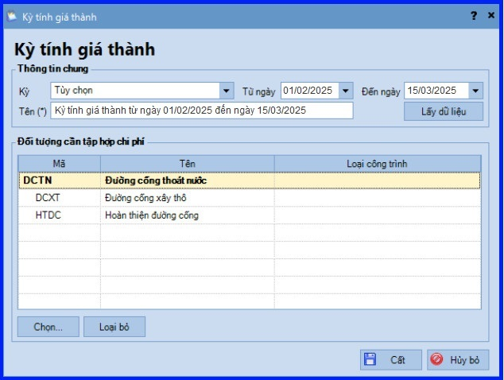
- Các bạn ấn "Cất".
CHÚ Ý: Sử dụng chức năng "Chọn/Loại bỏ" để chọn bổ sung hoặc xóa các công trình/hạng mục công trình trên danh sách.
Bước 6: Phân bổ chi phí chung
Với các doanh nghiệp tính giá xuất kho theo phương pháp "Bình quân cuối kỳ", trước khi thực hiện phân bổ chi phí chung cần phải thực hiện chức năng Tính giá xuất kho trên phân hệ "Kho". Sau đó, thực hiện phân bổ chi phí chung theo hướng dẫn sau:
- Vào phân hệ "Giá thành" => chọn tab "Công trình".
- Chọn kỳ tính giá thành trên danh sách và chọn chức năng "Phân bổ chi phí chung" bên thanh tác nghiệp (hoặc nhấn chuột phải, chọn chức năng "Phân bổ chi phí chung").
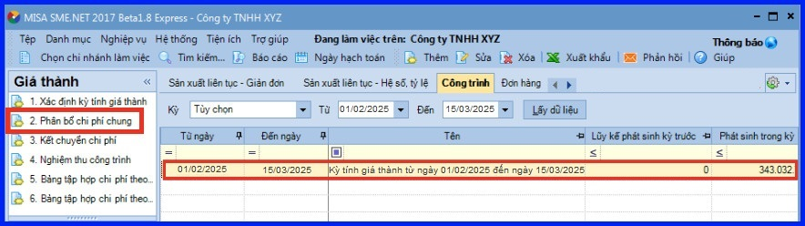
- Các bạn ấn "Đồng ý" => hệ thống sẽ tổng hợp các chứng từ xuất kho NVL (TK 621), hạch toán chi phí lương (TK 622), chi phí sản xuất chung (TK 627) chưa có thông tin "Công trình/Hạng mục công trình" để thực hiện việc phân bổ.
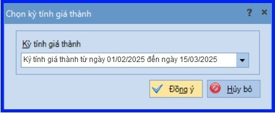
- Nhập tỷ lệ phân bổ và lựa chọn tiêu thức phân bổ.
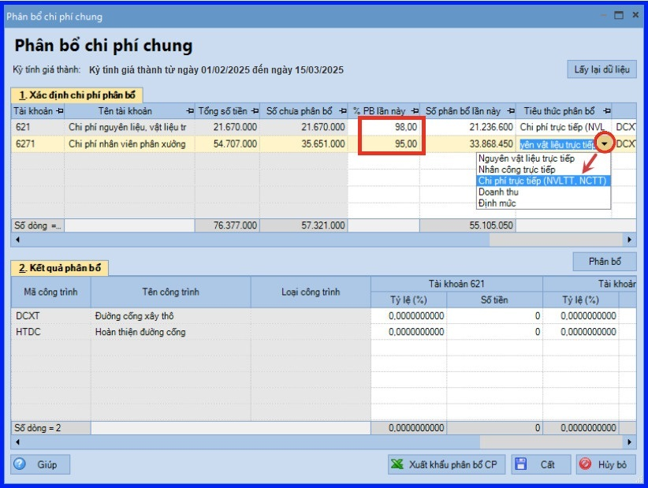
- Các bạn ấn "Phân bổ" => hệ thống sẽ tự động phân bổ chi phí theo từng công trình/hạng mục công trình trong kỳ tính giá thành.
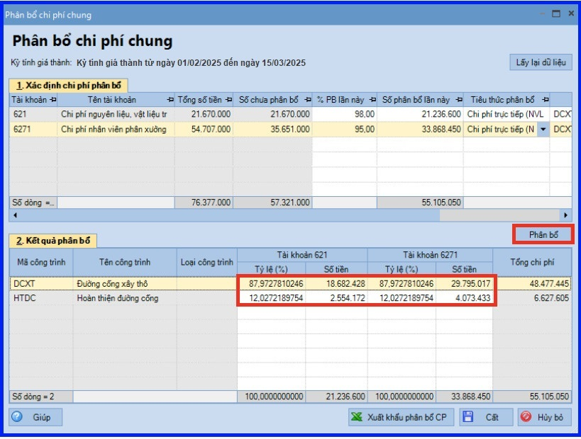
- Các bạn ấn "Cất".
CHÚ Ý:
- Phần mềm sẽ tự động xác định và tách dòng "Chi phí hợp lý/ không hợp lý" (nếu có) dựa vào các chứng từ chi phí phát sinh đã hạch toán.
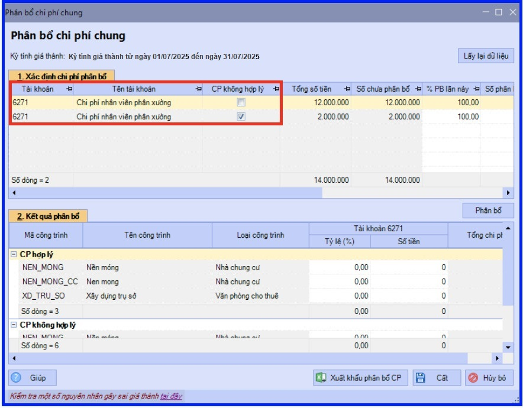
- Có thể kiểm tra danh sách chứng được tổng hợp để phân bổ chi phí chung bằng cách sử dụng chức năng "Xem" tại cột "Chi tiết chứng từ" trên tab "Xác định chi phí phân bổ".
- Nếu chọn chức năng "Lấy lại dữ liệu" => các thông tin thiết lập phục vụ cho việc phân bổ chi phí chung trước đó sẽ bị xóa đi và phải thực hiện lại việc khai báo.
- Sau khi tính giá thành xong, có thể kiểm tra thông tin chi phí chung được phân bổ trên tab "Bảng phân bổ chi phí chung" của màn hình danh sách kỳ tính giá thành.
Bước 7: Nghiệm thu công trình
- Vào phân hệ "Giá thành" => chọn tab "Công trình".
- Chọn kỳ tính giá thành trên danh sách và chọn chức năng "Kết chuyển chi phí" bên thanh tác nghiệp (hoặc nhấn chuột phải, chọn chức năng "Kết chuyển chi phí").
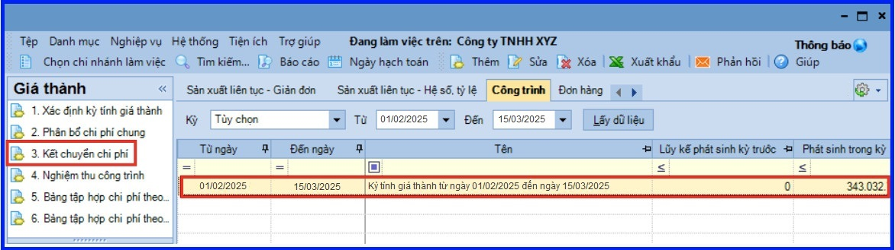
- Các bạn ấn "Đồng ý", hệ thống sẽ tự động tổng hợp chi phí từ các TK 621, 622, 627,… để kết chuyển sang 154.
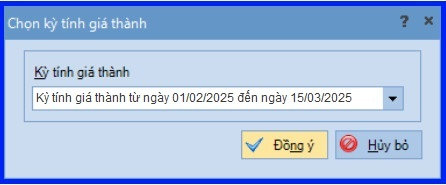
- Các bạn kiểm tra chứng từ kết chuyển chi phí.
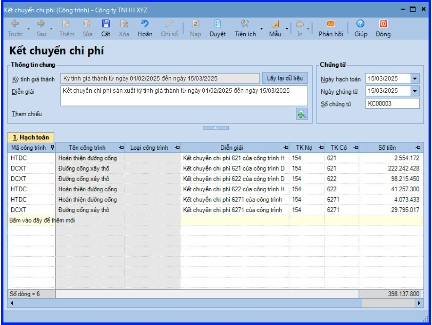
- Các bạn ấn "Cất".
CHÚ Ý:
- Phần mềm sẽ tự động xác định và tách dòng "Chi phí hợp lý/ không hợp lý" (nếu có) dựa vào các chứng từ chi phí phát sinh đã hạch toán, và bảng phân bổ chi phí. Mỗi dòng kết chuyển có Chi phí không hợp lý thì sẽ tách 2 dòng (dòng trên – Chi Phi hợp lý; dòng dưới – Chi Phí không hợp lý) theo lần lượt TK, công trình.
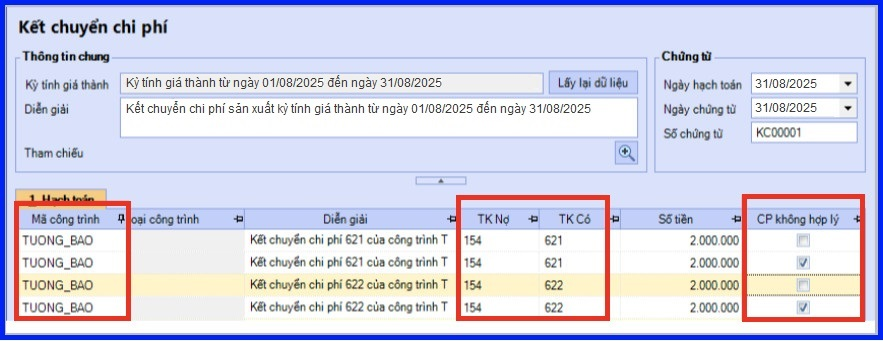
- Trường hợp muốn xem lại các chứng từ kết chuyển chi phí đã lập trước đó
- Chọn chức năng "Duyệt" trên chứng từ "Kết chuyển chi phí".
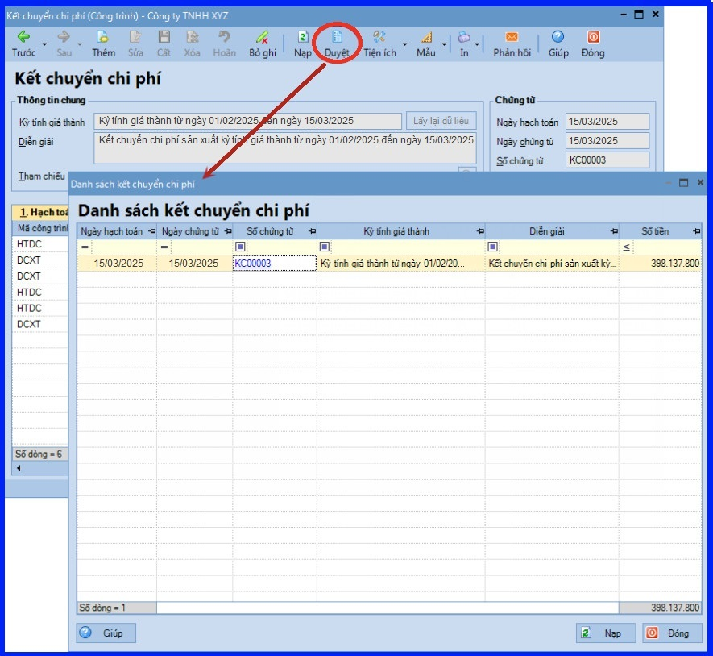
- Hoặc vào menu "Nghiệp vụ" => chọn "Giá thành" => chọn "Công trình" => chọn "Kết chuyển chi phí" để kiểm tra
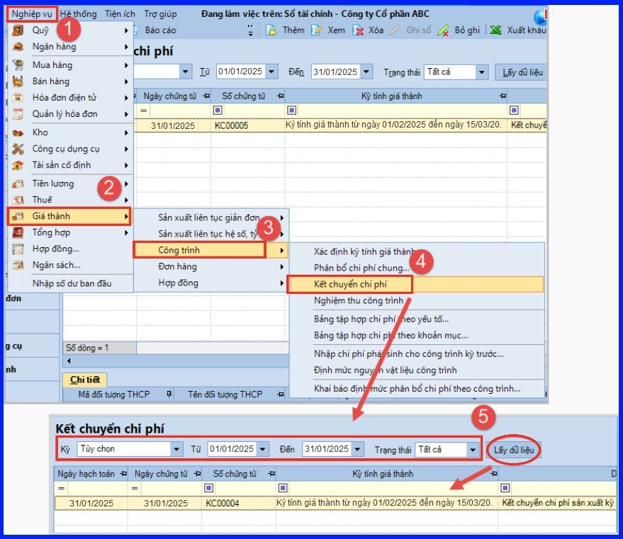
Bước 8: Nghiệm thu công trình
- Vào phân hệ "Giá thành" => chọn tab "Công trình".
- Chọn kỳ tính giá thành trên danh sách và chọn chức năng "Nghiệm thu công trình" bên thanh tác nghiệp (hoặc nhấn chuột phải, chọn chức năng "Nghiệm thu công trình").
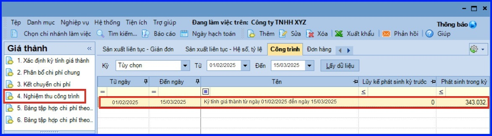
- Chọn kỳ tính giá thành và tích chọn các công trình/hạng mục công trình cần nghiệm thu.
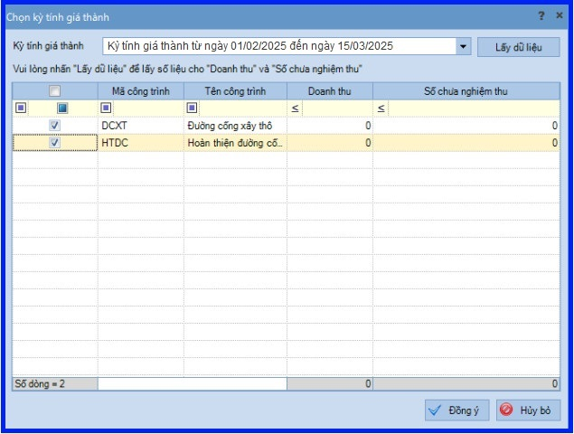
CHÚ Ý: Nhấn "Lấy dữ liệu" để xem được doanh thu đã phát sinh theo từng công trình/hạng mục công trình.
- Các bạn ấn "Đồng ý" => hệ thống sẽ tự động tổng hợp chi phí của từ TK 154 để kết chuyển sang TK 632.
- Nhập kết quả nghiệm thu cho từng công trình/hạng mục công trình.
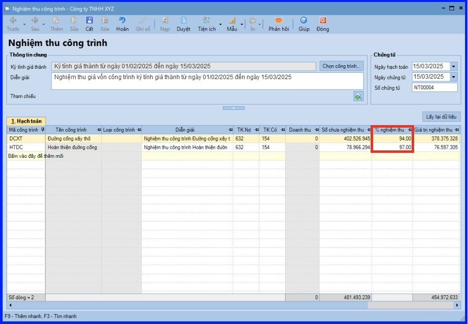
- Các bạn ấn "Cất".
CHÚ Ý:
- Phần mềm sẽ tự động xác định và tách dòng "Chi phí hợp lý/ không hợp lý" (nếu có) dựa trên các thao tác trước đó.
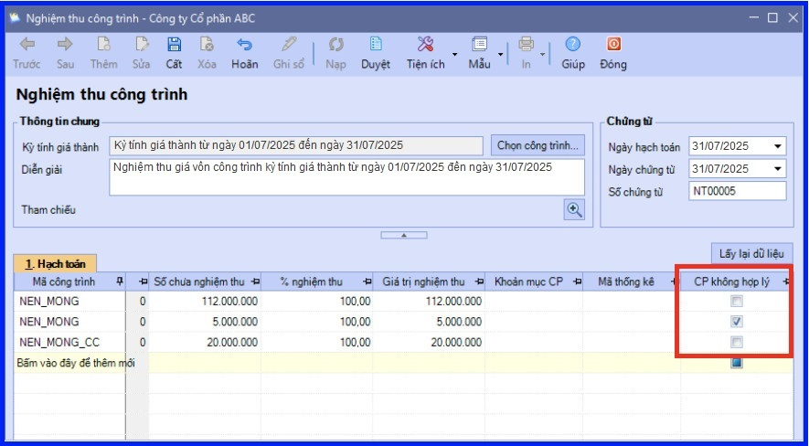
- Trường hợp muốn xem lại các chứng từ nghiệm thu công trình đã lập trước đó, chọn chức năng "Duyệt" trên chứng từ "Nghiệm thu công trình".
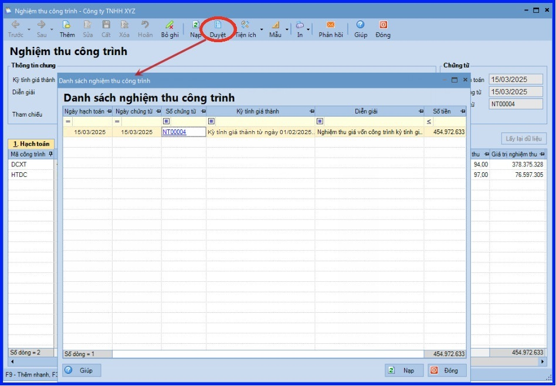
KẾ TOÁN DIỆU TÂM chúc các bạn làm tốt!
=============================
Nếu bạn muốn thành thạo các kỹ năng làm kế toán trên phần mềm Misa
Thì bạn có thể tham khảo "Khóa Học Thực Hành Kế Toán Trên Phần Mềm Misa" tại Công ty đào tạo Kế Toán Diệu Tâm
Trong khóa học này, bạn sẽ được dạy cách lên sổ sách, lập báo cáo tài chính trên phần mềm Misa
Chi tiết về chương trình đào tạo bạn xem tại đây nhé: Khóa học thực hành kế toán trên Misa
=============================